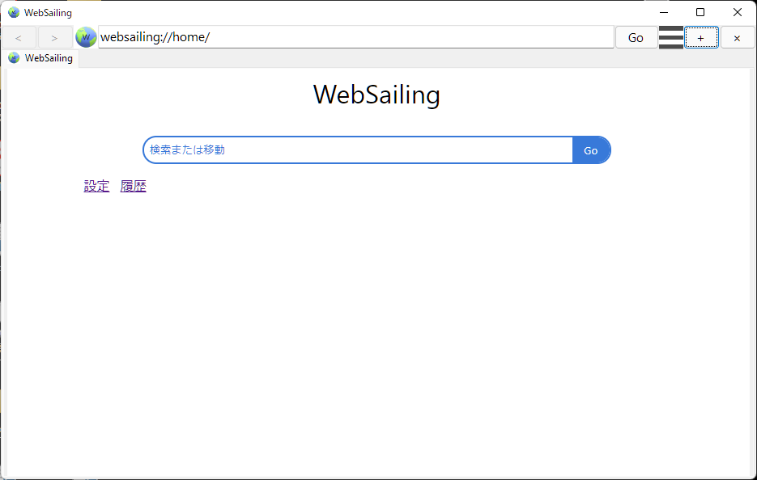

WebSailing

WSOFTDocsのWebSailingのサイトであるWebSailing Docsでは、WebSailingNXおよびGLの更新情報や使用方法についての様々なドキュメントを公開しています。
WSOFTDocsはあみうは、WebSailing-NetやAliceScriptWikiなどで公開していた記事を一つにまとめた、新しいサイトです。
WebSailingNXは、Chromiumをベースとしつつ昔ながらのUIに新しいものを加えて親しみやすくしたブラウザです。
WebSailing107(ベータ版)をダウンロード
WebSailing4.1(ベータ版)をダウンロード
WebSailing105.1(ベータ版)をダウンロード
WebSailing104.1(ベータ版)をダウンロード
WebSailing103.2(ベータ版)をダウンロード
WebSailing102.1(ベータ版)をダウンロード
WebSailing101(ベータ版)をダウンロード
WebSailing96(ベータ版)をダウンロード
WebSailing95(ベータ版)をダウンロード
WebSailing94(ベータ版)をダウンロード
WebSailing91(ベータ版)をダウンロード
WSOFT